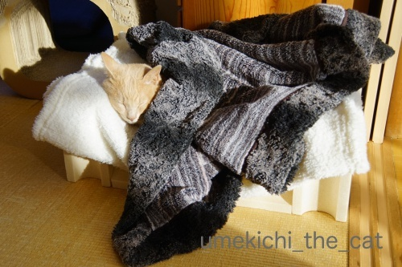

アワアワ・Hour [梅吉]
梅吉とプロレスしているおっとに
「おまたチョップしたことある？たるんっ！ぷよんっ！としてサイコー。」
と教えてみました。
ネコ変態なのでもちろんすぐに実行しますよ。
そうしたならば・・・
（7秒です＾＾音が出ます！音出して聞いてくださいね。）
梅吉はなぜか「アワ アワ」と変な鳴き方 (^_^;)
私がチョップしても鳴いたりしないのになんでかしら。
そういえば以前おしりをわしゃわしゃした時も
おっとだけに反応していたんですよねw
痛かったりするのかな？
おとーさんはおまたチョップしない方がいいね、なんて話してたんですが・・・
（30秒です＾＾音が出ます！）
これって自らチョップ待ちの姿勢になってますよねー(*>艸<)
後ろ足で若干の抵抗はしていますがイヤだったら本気で逃げるはず。
梅吉は腰ポンをねだる事はないのですがまさかのおまたチョップ要求？
楽しいんだか快感なんだかイヤなんだかよくわからない男同士の時間
「梅吉とおとーさんの アワアワ・アワー（Hour)」と命名しましたm(_ _)m

アワアワ・Hourの後は陽のあたるベッドでぬくぬく。
先月から今月にかけて皆様のブログで体調を崩されているとか
○○で病院に通っている、夜間救急外来に行ったとの記事を随分目にしました。
かく言う私も12月は週１で歯科通いをしていたんです。
12月初めごろから何か口にすると左下奥歯にず〜んと沁みます。
甘いしょっぱい冷たい熱い関係無し。
沁みがひどくて物を噛むのが億劫なほど。口に物を入れなければ症状は無し。
次回の定期検診は1月中頃予定でしたが
年末に大ごとになると厄介なので前倒しで受診することに。
レントゲンを撮っても先生がチェックをしても虫歯ではない。
どうやら原因は「知覚過敏」。
もともと知覚過敏っぽい症状はあったのですが今回のように痛いのは初めてでした。
で、いつもより丁寧なケアをしましょうということで
週１の歯科通いとなったのでした。
日ぐすりだったのかケアが効いたのかはわかりませんが
通っているうちに症状はすっかりなくなりましたよ(≧▽≦)
知覚過敏、お家でできるケアとして勧められたのが練り歯磨きを変えること。
最近市販で良いのが出たんだよ〜と先生に勧められたのがこれ。
知覚過敏の原因は歯の表面のエナメル質が削れてしまったり
（加齢などで）歯茎が下がって内部の象牙質がむき出しになって沁みる・痛むそうなんですが
象牙質をフッ素で再石灰化してエナメル質を補強することで予防できるんですって。
この歯磨き剤は市販品では最高クラスのフッ素濃度1450ppmF。
歯科の受付で850円で売っていたのですが「市販品でしょ」と思い
ドラッグストアで見たら550円で売っていたので早速ゲット
その後Amazonで見たらもっと安かったけど・・・
もう一つ進められたのはキシリトールタブレット。
（くしゃくしゃのパッケージでｽﾐﾏｾﾝ・・・）
キシリトール製品は沢山ありますがお砂糖が含まれているものは効果半減なんですって。
これは「歯科専用」と書いてあってキシリトール以外の甘味料はゼロのタイプ。
飲食後お口のケアが出来ない時はこれを口に入れておくと
歯にプラークがつくのを抑制してくれるんだとか。
結果知覚過敏の予防になるそうですよ＾＾
歯医者さんと話していて虫歯やプラーク、歯石や知覚過敏など引き起こすものとして
歯に良くないものはお砂糖がたくさん入った食品はもちろんだけど
あまり気にせず摂取されているのはお酒なんだって言われちゃいましたΣ(ﾟ◇ﾟ；)
日本酒は糖度が高いしワインに至っては糖度＋酸で最悪だそうです・・・(-_-メ)
と聞いてもお酒は我慢とは思わず
「飲んだ後は口をすすいでキシリトールタブレット！そして歯磨きは完璧に！！」と思ったのでしたw
先生もお酒大好きだって言ってたしー！！

カフェオレ色の梅吉

梅吉 2023年8月10日 永眠


梅吉と出会った譲渡会

犬猫の理由なき殺処分ゼロ
妄想広告
UMEKICHI 光

爆発的に早い！
時々攻撃的！
Thanks to Mr.Boss365
爆発的に早い！
時々攻撃的！
Thanks to Mr.Boss365

アワアワ・アワー 面白いニャ～（ﾟ□ﾟ）
北欧諸国では、キシリトールを子供の頃から摂取してるから虫歯になる人が少ないらしいよw
by 英ちゃん (2019-01-24 01:51)
なんか楽しんでそう。
自分から跨いで待ってますよね＾＾
by ぽちの輔 (2019-01-24 06:43)
ああ、今イヤホン持ってないし、電車の中やし
音出して動画見れなくて悔しー！！！
会社着いてから見ます(^_^;)
by よーちゃん (2019-01-24 07:34)
旦那様とのアワアワＨｏｕｒ♪
自ら催促してますね(#^.^#)
これから楽しいひとときになりますね！
by きぃ (2019-01-24 07:38)
アワアワアワー(笑
梅吉さん面白すぎます。きっとお父さんとお母さんではビミョ～に
手の動きや力加減が違うのでしょうね。男同士のヒ・ミ・ツ的な？
明らかにおまたチョップ待ちの体勢と睨んでいます(^・^
うちはNaoちゃんが腰ポンポン大好きで、タルちゃんはするとう‘～って唸って
怒り出します(笑
知覚過敏・・・ワイン最悪って～(>< ヤバイッス
歯磨きします、キシリトール買います(笑
by marimo (2019-01-24 09:34)
梅吉さん、アワアワですね(^^)
歯磨きって昨日車の中でラジオ聞いていたら一日1回でも良いので徹底的に５分以上磨くのが良いらしいです。
歯石は24時間で作られるので夜1回でもしっかり磨いた方が良いらしいです(^^)
by ma2ma2 (2019-01-24 10:09)
梅吉さんのアワアワタイム（笑）
絶対気に入ってますね〜（笑）
自分からチョップ待ちの姿勢とってますよ！
おかーさんおとーさんの手の厚みの違いかな？（笑）
梅吉さん、面白がっていると思います。
私が通う歯科医院ではコンクールという緑の歯磨きを進めています。
研磨剤が入ってないということです。
少し飽きてきたのでオススメを探しますね（アマゾンでww）
by kiki (2019-01-24 11:10)
おはようございます。
梅吉君！！完全に「アワアワ」を貰いに行ってますね！！
お尻を向けて「お願いします」のカメラ目線です。
ショートな「アゥー」？の鳴き声は「オッケー」と言っている感じです。
男同士の強い絆で結ばれた「アワアワ」儀式みたいです（笑）
小生猫に「アワアワ」やってみます？
知覚過敏はなった事ないですが「丁寧なケア」で改善は良かったです。
チェックーアップ・風味はない感じ？探して試してみます！？(=^･ｪ･^=)
by Boss365 (2019-01-24 11:13)
梅吉さんこれは絶対やってほしいんですよね。うちの猫達で試しても嫌がりも喜びもしないです。おっと様のゴッドハンドでないとダメなのかな。
私は熱が出ると歯が痛くなります。ストレスで痛くなる人もいるんだそうで、歯の神経は繊細だったりするんですね。
by zombiekong (2019-01-24 11:18)
幸せのアワアワ・アワー、梅吉さん、自らおっとさんの腕に跨りましたね(≧▽≦)
我が家では「チョップ」は私の仕事、油断しているときに「すきあり！」の掛け声とともにパフッとやるので、こんなほのぼほアワーにはなりません^^;
腰ポンポンはしつこいと噛まれるし、基本触られるのが嫌いなんですよ。
寂しいにゃ～(-_-;)
知覚過敏にワインが最悪って・・・私もキシリトール買います！！！
by ゆきち (2019-01-24 12:38)
梅吉さん、アワアワしながらも夫さんにおねだりしてるんですねぇ( ^ω^ )
うちは「おまたチョップ」にしても腰ポンポンにしても
ゴッドマザーは受け入れますが、私のは受け入れてくれません(ｰ ｰ;)
あっ、ノエルさんだけは腰ポンポンさせてくれる*\(^o^)/*→自分で言っててちょっと悲しいw
梅吉さんとのアワアワ・アワー、幸せな時間ですねぇ♪( ´▽｀)
￬
５５１の商品をGET 出来る時にはちぃさんお薦めの
「しゅうまい」も是非とも手に入れたいと思います(^_^)v
by ニッキー (2019-01-24 12:44)
やだ～。吹き出しちゃったよ～！
アワワ。アワワワ～。
もう一回を求める梅吉くん。
男同士で何か感じるものがあるのかな・・・ｗ
満足してぬくぬくすやすや眠る梅吉くん可愛いっ♪
歯の痛みの原因がわかってよかった！
痛みが消えると生き返った気分だよね。
by emi (2019-01-24 15:34)
今正に！私も全く同じ症状！対象箇所も同じであります！(T▽T)読みながらウンウンと激しくうなづいていました〜
ホント、苦痛で仕方ない…この歯磨き使ってみよう！いい情報ありがとう(^^)b
梅吉しゃんとおとーさんのアワアワアワー（≧∇≦）何て素敵な時間〜☆明らかにやれと催促してますねww
ウチは「お腹モチモチお餅ごっこ」と称してお腹のルーズスキン(と言うらしい)をポテポテと触るのですが…激しく拒否られケリのお見舞いです(°_°)即流血ですねwww
by くつしたにゃん (2019-01-24 19:50)
梅吉さん、アワアワ・アワー！？ ぷぷ、かわいい～～＾＾
新たな快感に目覚めちゃったのですね～♪
力加減とかなにか違うんでしょうか。
知覚過敏なるほど‥！ 参考になります～。歯医者さんに相談したことはないんですが、ちょっと痛みがあるときに歯磨きを変えたり、しょっちゅうキシリトールかんでいたら治ったことあります＾＾
by sana (2019-01-24 21:39)
アワアワ、不思議ですね。
早速ウチのヤツにやってみましたが無反応でした。^^;
ワインはあまり飲みませんが、歯には良くないのですね。
私も最近、歯茎が下がってきて食べ物が残りやすくなり、2ヶ月に1回のペースで歯医者に通ってます。
何処で得た情報か忘れましたが、寝る前にウーロン茶を飲むといいって聞いたことがある気がしますが、どうなのでしょうね。
ウーロンハイは好きですがお酒なのでプラマイゼロかな？^^;
by yes_hama (2019-01-24 21:45)
アワアワ・アワー、いいですね！
痛い声には聞こえませんし喜んでいるのでは？？*^^*
わたしも、うちもものところをたるんたるんさせるの好きです！
わたしも１月に新しい歯科に行きました。
12月から、同じようにちょっと違和感を感じていたのですが（痛くはない）
虫歯ではないので知覚過敏かもしれませんね、と言われました。
で、おすすめされた訳ではないのですが、ちょうど歯磨き粉がなかったので
全く同じやつ買いましたよ〜。（こっちは580円でした・・・あれ？^^;）
裏の上部に「歯科用」って入ってますよ。市販のはどうなんだろう。
by Ja-Kou66 (2019-01-25 00:04)
アハハ(^O^)
梅吉さん、これ気に入っていらっしゃる( ´艸｀)
あかりにやってみたら、噛まれました＾＾；
腰ポンポンも、冷たい目で見て逃げて行くし…＾＾；
キシリトールってよく聞くけど、ガムが好きじゃないので
スルーだったのですが、タブレットがあるんですね。
私も試してみようかな～＾＾
by マーヤ (2019-01-25 00:32)
おまたチョップ要求してる！！
これはまちがいなくしてる！！
あおくんにも、おまたチョップしますよー。うみは嫌がるのでやらないｗｗ
わたしも20年くらい知覚過敏なんです。
なのでシュミテクトをやめちゃって、べつのはみがきこにすると
またしみだすの^^;
たまに歯医者さんで、しみるところになんか塗って貰ってガードしてます。
そっか、酒か・・・
砂糖は摂取しないから、原因は酒だろうな・・・
by リュカ (2019-01-25 10:21)
おまたチョップやってみよう(*´ω｀*)
知覚過敏！私も昨年夏ごろから酷くなってきて先日歯医者でコートを塗ってもらいました。でもちょっとマシくらい。何度かその歯医者さんには相談してたんですが「歯の磨き方が強すぎるんですよ」と言われ続けています。かといって減った歯茎は戻らんし…(T_T)その歯磨き買ってみます！
by palpal (2019-01-25 15:57)
面白すぎです！今度しょうちゃんで試してみようかな。
癖になったら困るけど・・・(^^;)
by kou (2019-01-25 19:26)
嫌がってるようには見えません。むしろ好きなんでしょうね^^
by ニコニコファイト (2019-01-26 11:14)
きゃあ♡ まさかの「おまたチョップ」おねだり!!!
･･･しか〜も♪ オトコ同士がよいのか(@@;)
by のらん (2019-01-26 11:33)
英ちゃんさん＞
キシリトーリが日本で紹介され始めた頃コマーシャルで
「フィンランドでは・・・・」って言ってたのを思い出しました＾＾
歳がバレるなぁwww
歯医者の先生も
「うちの子供は小さい時からキシリトール舐めているから虫歯ないよ」って
言ってましたー！
ぽちの輔さん＞
絶対偶然じゃないですよね！この跨り方(*>艸<)
跨いだ後必ず私の方見てドヤ顔するんですよねー。
「たのしい わしを みてやー！」って思ってるのかなw
よーちゃん＞
梅吉の「アワアワ」声がポイントです！
響き渡る梅吉のアワアワに
隣席の方に「何見てるんですか？」って言われちゃいそう(*>艸<)
きぃさん＞
絶対催促してますよねw
しかも何度も何度も催促するので
「いいかげんにしなさい！」ってなります(⌒-⌒;
新しい遊び（？）が加わってますます楽しいプロレスタイム♪
marimoさん＞
おとーさんゴッドハンド説が出ております(*>艸<)
跨った後必ず私にドヤ顔で視線を送ってくるので
ご披露的な何か、のつもりでもあるんでしょうかw
タルさんは腰ポンNGなんですね！
猫様も反応がいろいろですねー！
梅吉もおっとが腰ポン・おまたチョップをすると
「う”〜〜〜〜」って言う時があるんですが逃げない、怒らない、再要求。
複雑な胸の内、聞いてみたいです（笑）
練り歯磨きも、タブレットもAmazonにありましたよ！さぁ！ぽちっ。
ma2ma2さん＞
なるほど！歯磨きは回数よりも完成度なんですね＾＾
私の歯磨き時間は長いです。時間のある夜だと20分くらい。
しかし！知覚過敏は磨きすぎ（力強すぎ）にも原因があると言われているので
力んで磨かないように努めています。
kikiさん＞
チョップ待ちの姿勢、初めは偶然かなぁとおもっていたのですが
この動画を撮った時「待ち」を確信しましたw
しかも必ず私の顔を見ながら跨るんですよね・・・なんでだろう(⌒-⌒;
コンクール、以前kikiさんがブログで勧めてくださったものですよね。
私の通う歯科にも置いてあります。
が最近は宣伝ディスプレイが今回私の買ったものイチオシに変化w
きっと先生がメーカーから何かもらったんじゃないかと思ってます(*>艸<)
チェックアップも「低研磨」（不使用ではないw）って書いてます。
発泡剤もあまり使っていないのでお口の中がアワアワにならずに
快適に歯磨きできまーす。
（梅吉的アワアワではありませんwww）
Boss365さん＞
やっぱり「アワアワ」要求ですよね！
カメラ目線、カメラ構えてなくても跨ったら私に視線を送ってきます。
なんでだろうwww
ショートな「アゥー」は「Come on！」ですよ(*>艸<)左手握ってないけどw
アワアワ儀式、私は資格もテクニックもないようなので
今まで通りたるんぷよんを楽しむ方向で、と思ってまーす＾＾
チェクアップ、「低研磨・低発砲〜」って書いてあります。
ミント味もキツくないので歯磨き直後にものを食べても
味を邪魔しない感じです。
zombiekongさん＞
ん？スットコランドのみなにゃんは反応なしですか。
実はこのブログをアップするときにzombiekongさんから
「それは、○○という現象なので止め他方が良いです。」と
ご指摘を受けるんじゃないかと思っていました (｡-_-｡)
何もなかったと言うことはお墨付きをいただいたも同然！（なんのだw）
おっとのおまたチョップ解禁！？
いえ、ほどほどにしますけど(*>艸<)
体＆精神状態の不調時、自分のウイークポイントに痛みがくるのわかります！
私は腰にくる人だったんですが今後は歯にも来るのかも・・・
知覚過敏Maxの時は「きーっ！」ってなっている時でもあったしw
おばちゃんは結構繊細なのかしら。。。
ゆきちさん＞
積極的に跨って「ちょっぷして ええで」「くるしゅう ないで」
と言っているようにも見えますよねw
刺客のこてつくんの隙を突くのは難しくたまの機会でしょうか。
それだけにあのたるんぷよんは
スリリングさとあわせてたまらない感触でしょうねwww
機会が少ない＝喜び倍増の気がします(*>艸<)
ワイン最悪説、飲兵衛の方々から強いレスポンスが！
記事にして良かったです(≧▽≦)
by ちぃ (2019-01-26 13:25)
ニッキーさん＞
これは完全にオネダリですよね(⌒-⌒; )しかもおっと限定w
ニッキーさんちは相手がゴッドマザー様だったらなんでもあり、
なんでしょうねー。
ニッキーさんはノエルさんと腰ポンの絆をますます強めて
アルさんとのお風呂タイムの充実を図ってくださいませ(^_－)☆
５５１のしゅうまいぜひぜひ〜。
ちなみに大阪の玄関、関空・伊丹の両空港、新大阪駅
全てに５５１の店舗があります！
emiさん＞
アワアワ・アワー、男同士だからこそなんでしょうか(⌒-⌒; )
私がやっても無反応なので
「おかーさんには わからないせかいや」と言われている感じがしますw
私はたるんぷよんが楽しめればOKだから寂しくなんかないもん・・・
痛みなくご飯が食べられるっていいねぇ〜とつくづく思いました。
「入れ歯が不調で・・・」とあまり食べない
お年寄りの気持ちがわかるような気がしました（←それかいっw）
くつしたにゃんさん＞
あらまー！
同い年＆同じ誕生日は同じような症状が同時期に出るのかしら！
ご飯食べるのに違和感があるのは本当に辛いですよね；；
歯磨き剤で少しは症状が良くなるといいなぁ・・・
お腹モチモチごっこも良いですねー0(≧▽≦)0
うちはルーズスキンがあまりモチモチしていないので
断然うちもののお肉ですわw
たるんぷよんとたまらない感触でーす。
次回お目にかかったらお試しください(*>艸<)
sanaさん＞
梅吉まもなく４歳にして初めて知る快感・・・でしょうか(*>艸<)
私のおまたチョップは私が楽しむためのものですが
おっとは梅吉を喜ばせようとしているあたりが違うのかしらw
二人で楽しんでくださいねって見守ってます^^
知覚過敏、思ったよりもたくさんの方が症状をお持ちのようです。
私の場合は磨きすぎにもあるようで（エナメル質が削れてしまう）
力まず優しく歯磨きを心がけております。。。
by ちぃ (2019-01-26 13:54)
yes_hamaさん＞
アズ氏は反応なしですか・・・腰ポンがお好きなのかしら？
知覚過敏、症状があるのですねー。
歯茎の下り、磨きすぎ、私も思い当たることありあり。
おまけにワイン好きですしw
寝る前にウーロン茶は初めて聞きました！
焼酎は糖度は低いようですが入ってない方が良いですよ、きっと(^_－)☆
Ja-Kou66さん＞
アワアワ声の間に若干の「う”〜」と「カフーッ」という
ため息みたいな声が入るのでなんとも感情が掴めなくてwww
でも逃げないので痛みはないのは確かですよね！
アワアワ・アワーはほどほどに楽しんでもらおうと思ってます＾＾
私はたるんたるん専門でwww
昨日歯科に行ってきたのでもう一度確認してきました！
やっぱり850円。裏側上部に「歯科用」って書いてました。
（ドラッグストアで買ったのも全く同じですw）
歯科受付でのお値段は、
大阪なので値段交渉の余地を残してってことでしょうか(*>艸<)
マーヤさん＞
やっぱり気に入ってますよねー。
皆さんにそう言っていただいて私も確信に変わりました！
あかりちゃんは腰回りのタッチはお好みではないのですね。
マーヤさんとはおでこポーンのタッチで触れ合いたいのですねw
次もちゃんと驚いてくださいね(*>艸<)
ガムは砂糖でコーティングしているのであんまりオススメしないなと
歯医者さんは言ってました。
タブレットはフリスクケースに入れて持ち歩いてまーす＾＾
リュカさん＞
あおくんへのおまたチョップは被毛の手触りと
たるんぷるんのうちももの感触と両方楽しめそう0(≧▽≦)0
皆さんからのコメント読んでたら女の子が嫌がる傾向が？
臓器の位置の関係なのかしら・・・
梅吉は鼻の穴膨らまして「カフーッ」とかため息みたいのもつくのwww
私の歯医者さん、
以前知覚過敏の症状を訴えたらシュミテクトのサンプルくれました。
今は今回買った歯磨き一押しw
きっと業者さんからなんかもらったのかもしれないwww
情報集めていると飲んだ後は口をすすぐくらいじゃダメっとも言われているから
一緒にタブレット摂取しよう！！
by ちぃ (2019-01-26 15:29)
palpalさん＞
知覚過敏は体調だったり季節的なものだったり
精神的なものだったりもするようですよー。
でもまずは外側から出来ることから！
磨き方は私も注意されましたw
歯ブラシの一番下をかるーく掴んで（握ってはいけない）
小刻みにいいかげんに動かすのがポイントって言われたなぁ・・・
難しいよねwww
歯磨きで痛みが減りますようにー！
kouさん＞
みなさんのコメントを読んでいたらおんにゃのこは嫌がる傾向が・・・
最初はそっとしてみてくださいね(^_－)☆
気に入ってくれたらますますkouさんの家に入り浸っちゃう！？
ニコニコファイトさん＞
やっぱりそう見えますよねー(*>艸<)
癖にならない程度に時々やってもらいますwww
のらんさん＞
「おまたチョップ」を要求するにゃんこ・・・
なかなかいないですよねー(*>艸<)
オトコ同士ってのがなんだか怪しい世界のような気もしますが (＠◇＠)
by ちぃ (2019-01-26 16:01)
自分から行ってますね~。
あやしい風景^m^
力加減の差なのでしょうか？
私も最近、若干知覚過敏気味。
気をつけよう。
by ふにゃいの (2019-01-26 20:11)
ふにゃいのさん＞
なんだか怪しい雰囲気、ふにゃいのさんも感じましたか(*>艸<)
二人の世界、そっとしておこうと思ってます・・・
冬は知覚過敏の症状が出やすい時期でもあるようですよ！
お気をつけくださいませーm(_ _)m
by ちぃ (2019-01-27 08:42)
動画、楽しく拝見しました～
by 花好き人 (2019-01-27 15:46)
知覚過敏もつらいですねー
食べるの怖くなりますもんね
私も大晦日に休日診療の歯科にかかり
あげくに神経を抜いたのでした...
by ryang (2019-01-27 15:48)
花好き人さん＞
うふふ＾＾楽しんでいただけましたか！
引かれなくてよかったぁ・・・
ryangさん＞
ryangさんの記事を見て歯ぎしりの相談もしてきました！
今の所マウスピースするほどでもないって事でした。
気を抜かないようにお手入れして行かなくちゃって思ってます＾＾
by ちぃ (2019-01-28 15:41)